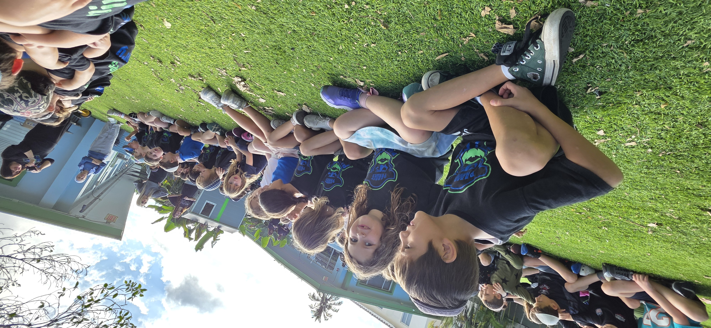

KH
Katy Horowitz
Head of School & Co-Founder
Also teaches 5th Grade ELA
From five children and a living room to over 220 students and two campuses. We're just getting started.
In 2011, Katy Horowitz moved from London to Miami Beach with a simple belief: Jewish education could be joyful, rigorous, and built for how children actually learn. She started with five students in a home daycare. That grew into Gan Katan preschool, then a kindergarten in 2017, then a grade added every year.
In 2024, the school purchased its building at 1211 Marseille Dr via an SBA loan after the community raised over $400,000 — a testament to the families who believed in what Pardes was building.
Today, Pardes Day School serves over 220 students across two campuses from preschool through 8th grade. The building changed. The mission never did.

"To provide a joyful, rigorous education that develops the whole child — academically, socially, and as a proud member of the Jewish community."
Head of School & Co-Founder
Also teaches 5th Grade ELA
CFO, Co-Founder & Director of Gan Katan
Principal, Elementary (K-5)
Principal, Middle School (MSAP)
Dean of Students & LeHashlim Director
Educational Consultant & Board Member
Katy Horowitz starts a home daycare with five children in Miami Beach.
Gan Katan preschool officially opens, bringing The Pardes Way to more Miami Beach families.
Kindergarten launches — the elementary school takes its first steps.
One grade added every year through 5th grade, building a complete K-5 elementary program.
Middle School at Pardes (MSAP) opens at 7055 Bonita Dr, extending The Pardes Way through 8th grade.
The school purchases its main campus building at 1211 Marseille Dr, supported by an SBA loan and over $400,000 raised by the community.
The best way to understand The Pardes Way is to see it in action. Walk through our classrooms, meet our educators, and experience what makes us different.